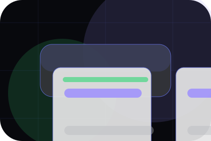
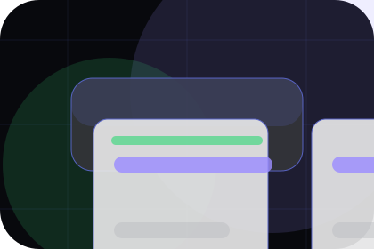
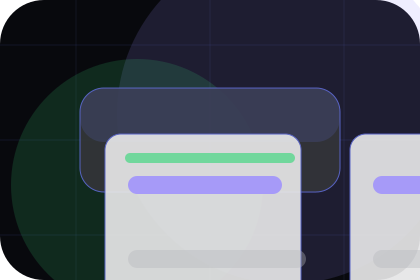

Pressure
Problem names the real friction visitors bring to the home route, so the page feels relevant before any claim is made.
Software
Dark product dashboard system for speed, clarity, and product confidence.
Home / 02
Problem frames the pressure behind the visit, then connects it to a practical path visitors can recognise and act on.
The copy avoids blame and panic. It shows the common friction, the practical consequence, and the calmer route Orbit uses to move people forward.
Open CompanyProblem names the real friction visitors bring to the home route, so the page feels relevant before any claim is made.
The copy connects that friction to practical risk, delay, confusion, or missed opportunity without exaggerating it.
The final cue moves visitors toward a clearer route instead of leaving them with the problem alone.
Home / 03
Promise defines the better state Orbit is built to create, with enough detail to make the promise believable.
A product-led SaaS site with a dark dashboard hero, precise modules, issue-like cards, and calm product copy. The section grounds that direction in concrete benefits, visible tradeoffs, and a next route visitors can use when the promise feels relevant.
Open ProductPromise defines what becomes clearer, easier, or safer when Orbit is the chosen route.
The benefit is tied to speed, clarity, and product confidence, not a vague quality claim.

Visitors get a linked path to compare the promise against services, standards, or examples.
Home / 04
Product explains the practical scope, best-fit situations, and expected outcome so software visitors can compare options without decoding jargon.
The section keeps the offer concrete: what is included, who it is best for, what decision it supports, and which linked route gives the deeper detail.
Open ProductWho should use product and when it belongs in the home journey.
The practical benefit visitors should expect after choosing this route.
Where to compare details, pricing, support, or contact options before committing.
Home / 05
Features adds technical context to the home route, using the dark product dashboard system structure to support speed, clarity, and product confidence before visitors choose a next step.
Orbit uses fine-line app cards and focused copy to make the decision easier to scan, aligning the section with speed, clarity, and product confidence rather than filling space.
Open SolutionsFeatures gives the page a specific angle instead of repeating the navigation label.
The fine-line app cards show what to compare, what to avoid, and what matters most for software, saas platforms & digital products visitors.
The final cue points to a useful internal route so the section keeps the journey moving.
Home / 06
Solutions defines the better state Orbit is built to create, with enough detail to make the promise believable.
A product-led SaaS site with a dark dashboard hero, precise modules, issue-like cards, and calm product copy. The section grounds that direction in concrete benefits, visible tradeoffs, and a next route visitors can use when the promise feels relevant.
Open PricingOrbit structures solutions around better state, practical gain, and a clear next route so visitors can compare the block quickly before they schedule a demo.
Schedule DemoHome / 07
Proof shows what changes after the work: clearer decisions, visible progress, and proof points that connect the offer to real outcomes.
The layout connects before-and-after thinking with measured outcomes, making the result easy to scan without promising what the business cannot guarantee.
Open ResourcesThe uncertainty, delay, or missed opportunity visitors bring into proof.
The clearer, safer, or more valuable state Orbit is designed to support.
The visible cue that connects proof to a believable decision, not a loose claim.
Home / 08
Integrations adds technical context to the home route, using the dark product dashboard system structure to support speed, clarity, and product confidence before visitors choose a next step.
Orbit uses fine-line app cards and focused copy to make the decision easier to scan, aligning the section with speed, clarity, and product confidence rather than filling space.
Open Blog
Integrations gives the page a specific angle instead of repeating the navigation label.
Home / 09
Questions handles buying doubts directly so visitors can understand timing, fit, limits, and the safest next step.
Answers are short by design: enough to remove hesitation, not so much that the page turns into documentation before the visitor can act.
Open ContactQuestions gives the page a specific angle instead of repeating the navigation label.
The fine-line app cards show what to compare, what to avoid, and what matters most for software, saas platforms & digital products visitors.

The final cue points to a useful internal route so the section keeps the journey moving.
Orbit starts with a focused intake so the recommendation matches the visitor's context, risk, timing, and readiness.
Each route explains inclusions, exclusions, documents, timing, and the decision points that affect final delivery.
The theme uses dark product dashboard system, fine-line app cards, and pricing toggle, feature tabs, integration filter, product ui display rather than a shared template rhythm.
App interface hero
Select the closest route and Orbit keeps the next step, proof, and follow-up expectation aligned with speed, clarity, and product confidence.
Home / 10
Orbit closes the home route with a clear action, a quick reminder of the value, and a low-friction way to schedule a demo.
Visitors who are ready can use the primary action. Visitors who are still comparing can scan the section links, proof, and support routes before they schedule a demo.
Schedule DemoThe final block keeps the choice simple: act now, compare one more proof route, or send enough detail for a focused response.
Schedule Demospeed, clarity, and product confidence
A product-led SaaS site with a dark dashboard hero, precise modules, issue-like cards, and calm product copy. Home ends with a direct path to schedule a demo, plus enough context for visitors who still need to compare.
 Schedule Demo
Schedule Demo